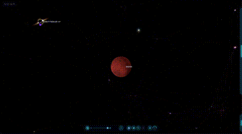

NOVA
Full-Stack / 3D & FastAPIAn interactive 3D cosmic map featuring planetary tiers, orbital telemetry, and an automated guided tour powered by FastAPI and Three.js.

Urban Heat Explorer
Geospatial / Earth ObservationAn interactive geospatial application that processes Landsat 8/9 Level-2 satellite scenes to evaluate land surface temperature variations across urban areas. Computes calibrated surface temperature from thermal bands and calculates vegetation (NDVI) and built-up indices (NDBI) across four distinct metropolitan biomes.
STAC queries, coordinate reprojection to native UTM via Rasterio, and radiometric calibration from raw digital numbers to Celsius.
Water-masked Folium thermal slippy maps, Plotly density contours, and Gemini multimodal scene diagnostic evaluation.
Background
With over 4 years of experience evaluating AI outputs, assessing prompt fidelity, and conducting rigorous data annotation, my focus centers on dataset integrity and practical system performance.
My recent work expands this background into Earth observation—combining Python spatial libraries like Rasterio and PyProj with vector retrieval workflows to turn raw scientific datasets into clear, usable applications.